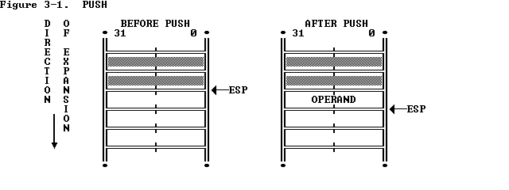
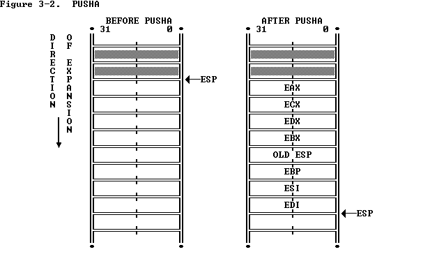
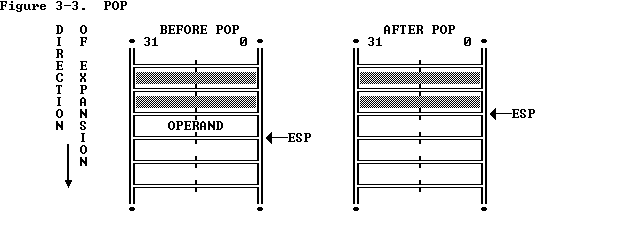
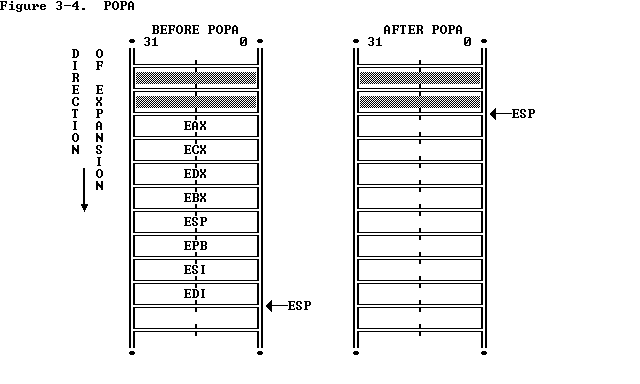
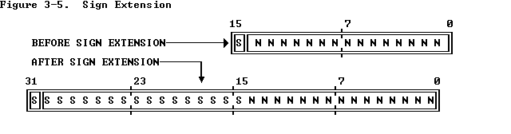

XCHG (Exchange) swaps the contents of two operands. This instruction takes the place of three MOV instructions. It does not require a temporary location to save the contents of one operand while load the other is being loaded. XCHG is especially useful for implementing semaphores or similar data structures for process synchronization.
The XCHG instruction can swap two byte operands, two word operands, or two doubleword operands. The operands for the XCHG instruction may be two register operands, or a register operand with a memory operand. When used with a memory operand, XCHG automatically activates the LOCK signal. (Refer to Chapter 11 for more information on the bus lock. )
PUSHA (Push All Registers) saves the contents of the eight general registers on the stack (see Figure 3-2). This instruction simplifies procedure calls by reducing the number of instructions required to retain the contents of the general registers for use in a procedure. The processor pushes the general registers on the stack in the following order: EAX, ECX, EDX, EBX, the initial value of ESP before EAX was pushed, EBP, ESI, and EDI. PUSHA is complemented by the POPA instruction.
POP (Pop) transfers the word or doubleword at the current top of stack (indicated by ESP) to the destination operand, and then increments ESP to point to the new top of stack. See Figure 3-3. POP moves information from the stack to a general register, or to memory There are also a variant of POP that operates on segment registers. This is covered in a later section of this chapter.
POPA (Pop All Registers) restores the registers saved on the stack by PUSHA, except that it ignores the saved value of ESP. See Figure 3-4.


There are two classes of type conversion instructions:
3.1.3 Type Conversion Instructions
The type conversion instructions convert bytes into words, words into
doublewords, and doublewords into 64-bit items (quad-words). These
instructions are especially useful for converting signed integers, because
they automatically fill the extra bits of the larger item with the value of
the sign bit of the smaller item. This kind of conversion, illustrated by
Figure 3-5, is called sign extension.
CBW (Convert Byte to Word) extends the sign of the byte in register AL throughout AX.
CWDE (Convert Word to Doubleword Extended) extends the sign of the word in register AX throughout EAX.
MOVSX (Move with Sign Extension) sign-extends an 8-bit value to a 16-bit value and a 8- or 16-bit value to 32-bit value.
MOVZX (Move with Zero Extension) extends an 8-bit value to a 16-bit value and an 8- or 16-bit value to 32-bit value by inserting high-order zeros.



up:
Chapter 3 -- Applications Instruction Set
prev:
Chapter 3 -- Applications Instruction Set
next: 3.2 Binary Arithmetic Instructions